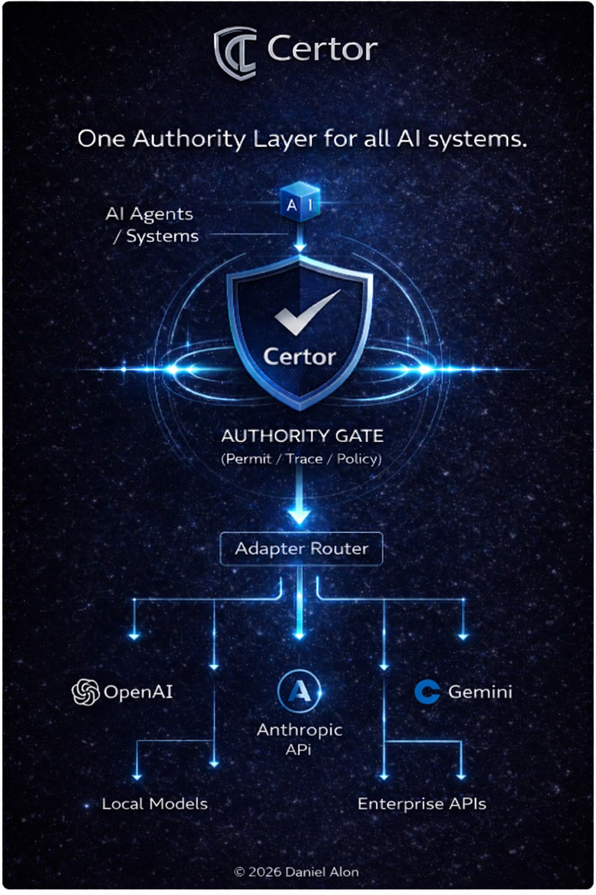

Authority Before Execution
This page presents a structural overview of Certor™ as an authority layer positioned before execution. Rather than allowing downstream action by default, the architecture introduces an explicit decision point before execution may proceed.

Architecture Overview
Certor™ is positioned before operational execution. Its role is not to replace the model, but to stand between system intent and real-world action.
The architecture introduces a separate decision layer capable of determining whether a requested action should proceed, be blocked, or be deferred.
Independent Gate
The authority layer is separated from the acting system, reducing reliance on self-authorization by the decision-generating component.
Explicit Decision
Each request produces an explicit result such as Permit, Block, or Defer, creating a clear pre-execution governance point.
Model-Agnostic Structure
The architecture is designed to function before downstream systems act, regardless of the model or service used beneath the authority layer.
Conceptual Execution Flow
↓
Certor Authority Gate
↓
Permit · Block · Defer
↓
Adapter Router
↓
External AI Services / Local Models / Enterprise APIs
Publication Context
The conceptual publication introduces the principle of Authority Before Execution. This architectural page complements that publication by presenting the structure in a more operational form.